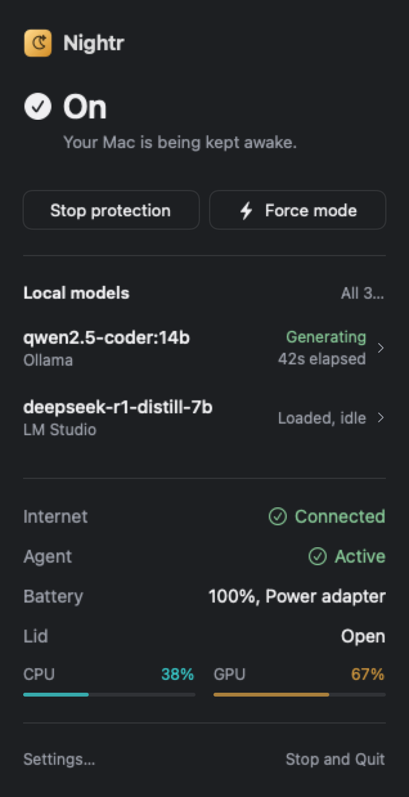

Keep work running
Choose when your Mac stays awake. Nightr can watch for active agents, local model generation, and internet access.
When you close the lid, Nightr can dim the display or lock the screen. It can also let your Mac sleep at a battery level you choose and try a saved hotspot if the internet drops.

Choose when your Mac stays awake. Nightr can watch for active agents, local model generation, and internet access.
Set a battery cutoff. Below that level, Nightr lets your Mac sleep. Protection can resume when you plug in.
If your connection drops, Nightr can try a saved hotspot. You set the attempt limit, and Nightr checks whether you’re back online.
Run nightr setup to authorize the helper and nightr config to edit your preferences. The CLI and menu bar app share settings and protection status.
$ nightr setup
$ nightr config
$ nightr start
$ nightr status --json
$ nightr stopThe macOS installer includes the app, CLI and runtime. Run nightr setup after installation to authorize the power helper.
Open the signed DMG and run the included installer.
brew install --cask agenthangar/tap/nightr